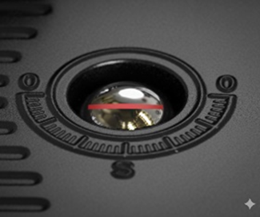
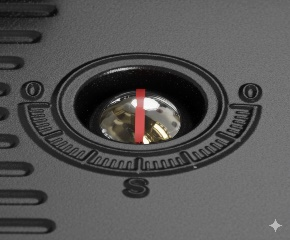

Manual Override
!!! IMPORTANT: Lifting the handwheel disables motor operation. Do not leave the handwheel pulled out in manual mode.
The manual override function allows you to operate the valve manually in situations such as a power failure or during system commissioning.
In the event of panel disconnection or power loss, the WV2M retains its last operating state (open or closed). When power is restored, the system updates and displays the current valve status in the BlueEye application.
!!! NOTES:
When a water alarm is triggered by a water detector (such as WD2M), the system automatically closes the valve. Clearing the alarm does not reopen the valve; the valve must be opened manually after the alarm is cleared.
When a fire alarm occurs, the WV2M opens and remains open until the alarm condition is cleared. This function is enabled by default. To disable it, go to Firmware > General > then tap the Fire Alarm Open Water Valves toggle to turn it off.
To operate the valve manually:
- Lift the handwheel. Rotate clockwise or counterclockwise until the valve is fully open or closed.
- Fully Open: Red line on the position indicator aligns with 0.
- Fully Closed: Red line on the position indicator aligns with S.
- Press the handwheel downward to restore automatic operation.